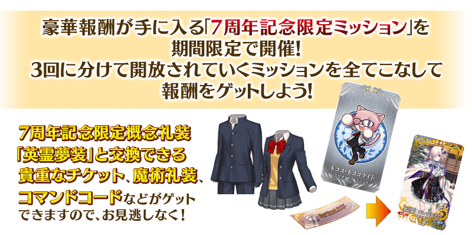
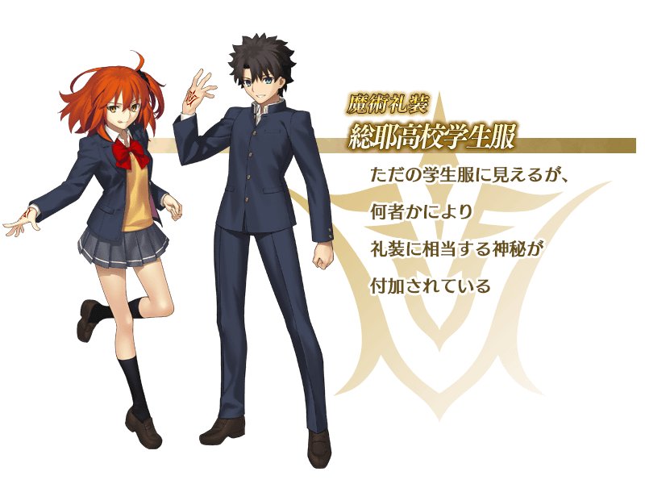
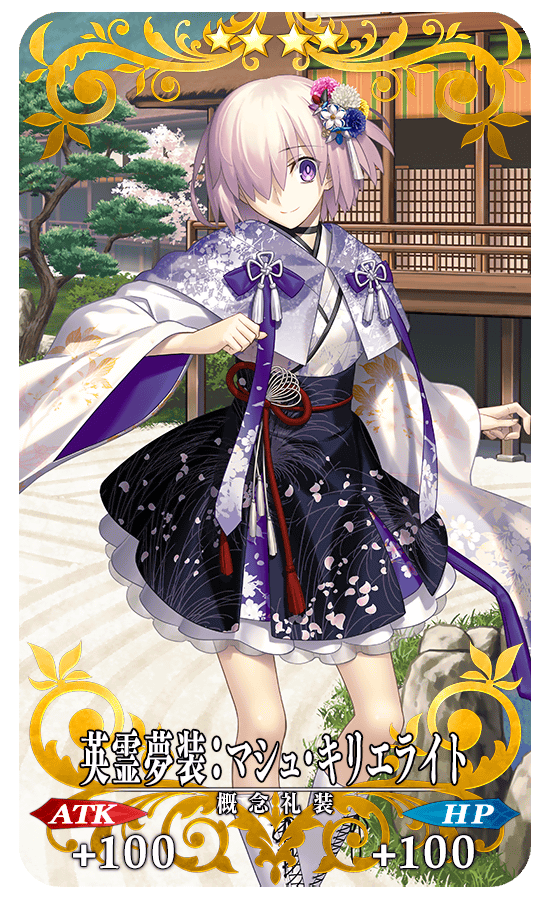
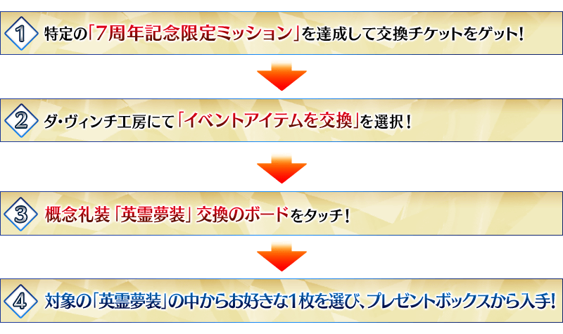
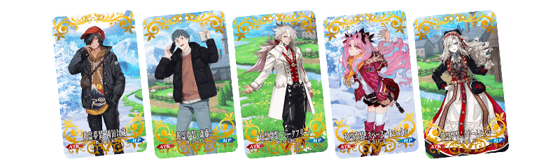
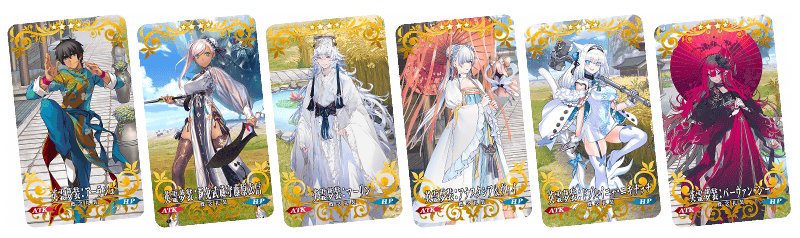
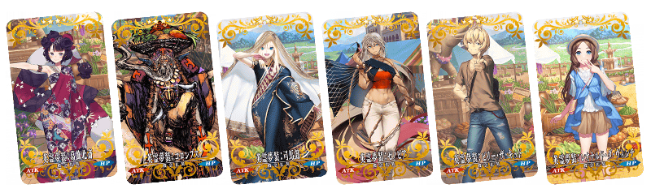
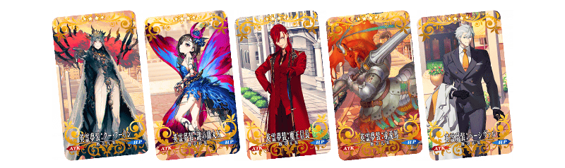

【7月31日(日) 17:30更新】
為了記念「Fate/Grand Order」的7周年，在「御主任務」的「限定」標籤內以期間限定追加「7周年記念限定任務」！

◆舉辦期間◆
2022年7月30日(六) 8:00(預定)～8月10日(三) 11:59
◆領取期間◆
2022年7月30日(六) 8:00(預定)～8月17日(三) 11:59
◆期間限定概念禮裝「英靈夢裝」交換期間◆
2022年7月30日(六) 8:00(預定)～8月17日(三) 11:59
※請注意舉辦期間與領取期間有所差異。 ※本頁面皆為開發中圖片。會有與實際圖片相異的情況。 ※在2018年12月31日(二) 23:00以後新配信的主線故事及期間限定活動、一部份關卡、宣傳活動及召喚中，會顯示隱藏真名的對象從者真名。
7周年記念限定任務一覧
【7月31日(日) 17:30更新】
【7月30日(六) 15:30修正】
| 開放時間 | 任務內容 | 達成報酬 | |
|---|---|---|---|
| 2022年7月30日(六) 8:00 | 通過1次任意的的進階關卡 | FGO 7th Anniversary 英靈夢裝券 1張 |
|
| 通過1次在7/30(六)開放的的進階關卡 |

|
魔力稜鏡 70個 | |
| 2022年7月31日(日) 8:00 | 通過2次任意的的進階關卡 |
|
魔力稜鏡 70個 |
| 通過1次在7/31(日)開放的的進階關卡 | FGO 7th Anniversary 英靈夢裝券 1張 |
||
| 2022年7月31日(日) 17:30 | 施行30次友情點數召喚 |
|
魔力稜鏡 70個 |
| 靠戰利品獲得10張任意「睿智的業火」「睿智的猛火」「睿智的大火」「睿智的灯火」「睿智的種火」 |

|
呼符 1張 | |
| 1位從者到Lv.30以上 | 指令紋章 ★3(R)ネココ・ネココライト 1張 |
||
| 通過5次任意的關卡 |

|
魔術禮裝 總耶高校學生服 |
|
※根據主線故事的進行度會有無法達成「7周年記念限定任務」的情況。 ※關於「通過1次任意的的進階關卡」及「通過2次任意的的進階關卡」的任務，在「進階關卡 第7彈」以前追加的關卡也是計算的對象。或是就算已經通過該關卡的情況，再次通過的話也會計算成任務的達成條件。 ※關於「通過2次任意的的進階關卡」的任務，就算同一個進階關卡通過2次的情況也是計算的對象。
從2022年7月30日(六) 8:00，只能靠自己培育的從者來挑戰的測試用關卡「進階關卡」的第7彈在迦勒底之門內永久追加。
【7月31日(日) 17:30追記】
魔術禮裝「總耶高校學生服」與指令紋章「★3(R)ネココ・ネココライト」做為「7周年記念限定任務」的達成報酬登場！
達成特定任務後可入手魔術禮裝「總耶高校學生服」與指令紋章「★3(R)ネココ・ネココライト」。
務必得到期間限定的貴重魔術禮裝吧！
可入手的魔術禮裝

可入手的指令紋章
|
★★★R |
【7月30日(六) 8:00更新】
「英靈夢裝」是以「各異聞帶的服裝」為主題所新繪製從者們的全38張期間限定概念禮裝。
用達成「7周年記念限定任務」後入手的「FGO 7th Anniversary 英靈夢裝券」交換的話，可入手最多2張的期間限定概念禮裝「英靈夢裝」。
成為交換對象的期間限定概念禮裝「英靈夢裝」種類會根據主線關卡的通過狀況增加。
請注意未通過成為條件的章節，無法交換。
※期間限定概念禮裝「英靈夢裝」是以最大限界突破及最大等級的狀態交換。
※全38張的期間限定概念禮裝「英靈夢裝」性能皆相同。
|  |
★★★★SR |

【7月30日(六) 8:00更新】
| 開放條件 | 開放的「英靈夢裝」 |
|---|---|
| 通過 特異點F 炎上汙染都市 冬木 | 英靈夢裝:沖田總司(Saber) |
| 英靈夢裝:曲亭馬琴 | |
| 英靈夢裝:望月千代女 | |
|
通過
Lostbelt No.1
永久凍土帝國 安娜塔西亞 |
英靈夢裝:迦摩(Assassin) |
| 英靈夢裝:太公望 |
【7月30日(六) 8:00更新】 
| 開放條件 | 開放的「英靈夢裝」 |
|---|---|
| 通過 特異點F 炎上汙染都市 冬木 | 英靈夢裝:岡田以藏 |
| 英靈夢裝:齋藤一 | |
| 英靈夢裝:齊格飛 | |
| 英靈夢裝:太空・伊絲塔 | |
|
通過
Lostbelt No.2
無間冰焰世紀 諸神黃昏 |
英靈夢裝:克里姆希爾德 |
【7月30日(六) 8:00更新】 
| 開放條件 | 開放的「英靈夢裝」 |
|---|---|
| 通過 特異點F 炎上汙染都市 冬木 | 英靈夢裝:阿拉什 |
| 英靈夢裝:新免武蔵守藤原玄信(Berserker) | |
| 英靈夢裝:梅林 | |
|
通過
Lostbelt No.3
人智統合真國 SIN |
英靈夢裝:安娜塔西亞＆Viy |
| 英靈夢裝:多布雷尼亞・尼基季奇 | |
| 英靈夢裝:芭班・希 |
【7月30日(六) 8:00更新】 
| 開放條件 | 開放的「英靈夢裝」 |
|---|---|
| 通過 特異點F 炎上汙染都市 冬木 | 英靈夢裝:葛飾北齋(Foreigner) |
| 英靈夢裝:哥倫布 | |
| 英靈夢裝:司馬懿 | |
| 英靈夢裝:潔諾比亞 | |
| 英靈夢裝:比利小子 | |
|
通過
Lostbelt No.4
創世滅亡輪廻 由伽・剎多羅 |
英靈夢裝:李奧納多・達・文西(Rider) |
【7月30日(六) 8:00更新】

| 開放條件 | 開放的「英靈夢裝」 |
|---|---|
| 通過 特異點F 炎上汙染都市 冬木 | 英靈夢裝:阿爾托莉亞・潘德拉剛(Ruler) |
| 英靈夢裝:雅克・德・莫萊 | |
| 英靈夢裝:超級班揚 | |
| 英靈夢裝:土方歲三 | |
|
通過 Lostbelt No.5 星間都市山脈 奧林帕斯 |
英靈夢裝:阿周那〔Alter〕 |
| 英靈夢裝:巴格斯特 |
【7月30日(六) 8:00更新】

| 開放條件 | 開放的「英靈夢裝」 |
|---|---|
| 通過 特異點F 炎上汙染都市 冬木 | 英靈夢裝:瑪修・基利艾拉特 |
| 通過 地獄界曼荼羅 平安京 | 英靈夢裝:詹姆斯・莫里亞蒂(Ruler) |
| 英靈夢裝:夏洛特・科黛(Assassin) | |
| 英靈夢裝:曼迪卡爾多 | |
| 英靈夢裝:美露莘 |
【7月30日(六) 8:00更新】 
| 開放條件 | 開放的「英靈夢裝」 |
|---|---|
| 通過 特異點F 炎上汙染都市 冬木 | 英靈夢裝:庫・夫林〔Alter〕 |
| 英靈夢裝:謎之蘭丸X | |
| 英靈夢裝:魔王信長 | |
| 通過
Lostbelt No.6 妖精圓卓領域 阿瓦隆・勒・菲 |
英靈夢裝:赤兔馬 |
| 英靈夢裝:帕西瓦爾 |
【7月31日(日) 17:30追記】
其他還有「進階關卡 第7彈」追加！
另外，
・Fate/Grand Order ～7th Anniversary～
・7周年記念 Archetype:EarthPick Up召喚
・7周年記念福袋召喚(職階區別20劃分)
以期間限定舉辦中！
並且，「7周年記念限定從者每日交替Pick Up召喚」也預定舉辦！
關於詳情，請自下述橫幅確認。
■「進階關卡 第7彈」詳細情報

■「Fate/Grand Order ～7th Anniversary～」詳細情報

■「7周年記念 Archetype:Earth Pick Up召喚」詳細情報

■「7周年記念限定從者每日交替Pick Up召喚」詳細情報

■「7周年記念福袋召喚(職階區別20劃分)」詳細情報